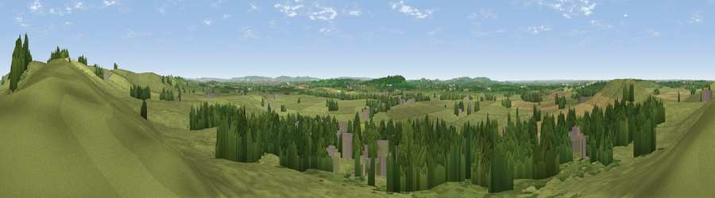

Viewpoint near Quainton
#16018 in England · top 16% of its area beats it · near Quainton · path 113 mWhere it is
The exact computed spot (SP 74475 20425). Click the marker for map links.
Public access: the nearest public right of way is about 113 m away — the final stretch may cross private land. Computed from Natural England's CRoW access layer and OpenStreetMap rights of way — not the legal definitive map. Always verify locally.
The view, rendered

A 360° render of this exact spot computed from the terrain model, tree cover and land cover — summer colours, afternoon light, calibrated against photographs of famous viewpoints. Real trees, hedges and buildings will differ in detail.
The panorama
Grey silhouette: terrain skyline in each direction (720 bearings, Earth curvature and refraction included). Dashed green: skyline with trees (+15 m) and buildings (+8 m) as obstacles. Blue strip: how far the ground is visible on each bearing.
Where the view opens
Wedge length = distance to the farthest visible ground on that bearing (vegetation-aware). Rings at 10, 25 and 50 km.
What fills the view
62% grassland · 23% woodland · 9% cropland · 7% built-up
Angular shares of the visible panorama (visual magnitude), not map area. Landscape diversity 0.44 (0–1 Shannon).
Key numbers
More beautiful places nearby
The staircase of upgrades: each row has a higher view potential than everything closer. Driving times are estimates from straight-line distance, calibrated against real road routing — check an actual route before setting out.
| Place | Direction | Drive | Score |
|---|---|---|---|
| Quainton Hill | NNE · 1 km | ~3 min | 59.7 |
| Viewpoint near Quainton | NNE · 1 km | ~4 min | 64.9 |
| Viewpoint near Ashendon | SW · 8 km | ~16 min | 65.0 |
| Muswell Hill | WSW · 12 km | ~22 min | 67.9 |
| Beacon Hill | SSE · 17 km | ~30 min | 72.7 |
| Coombe Hill Monument | SE · 17 km | ~30 min | 75.5 |
| Viewpoint near Woolstone | SW · 56 km | ~78 min | 76.7 |
| Viewpoint near Meon Vale | WNW · 62 km | ~85 min | 77.0 |
51.87743, -0.91953 · source: screening · position refined by local search. Computed location — check access rights before visiting.